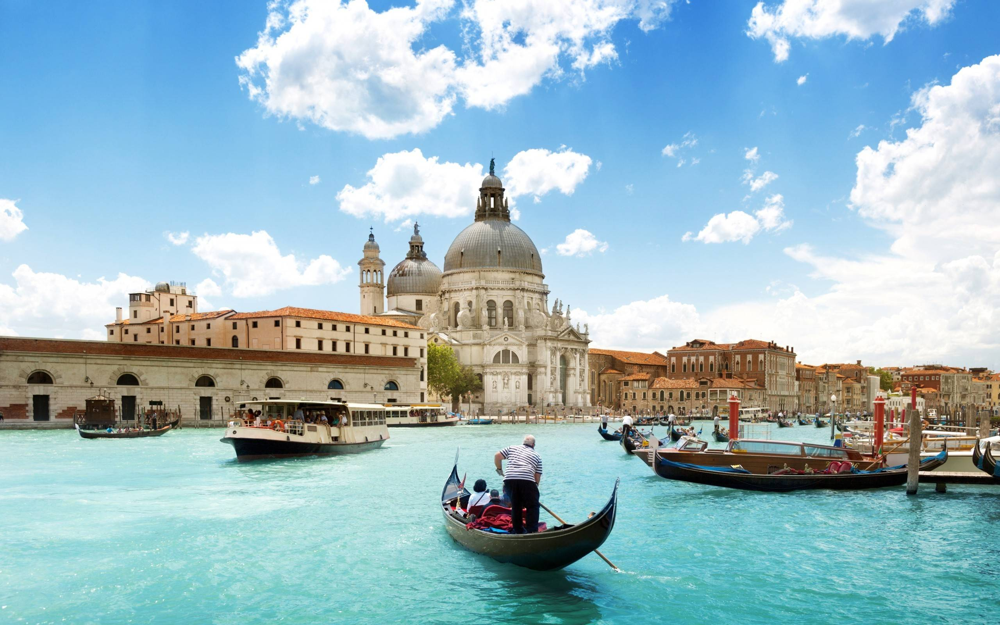
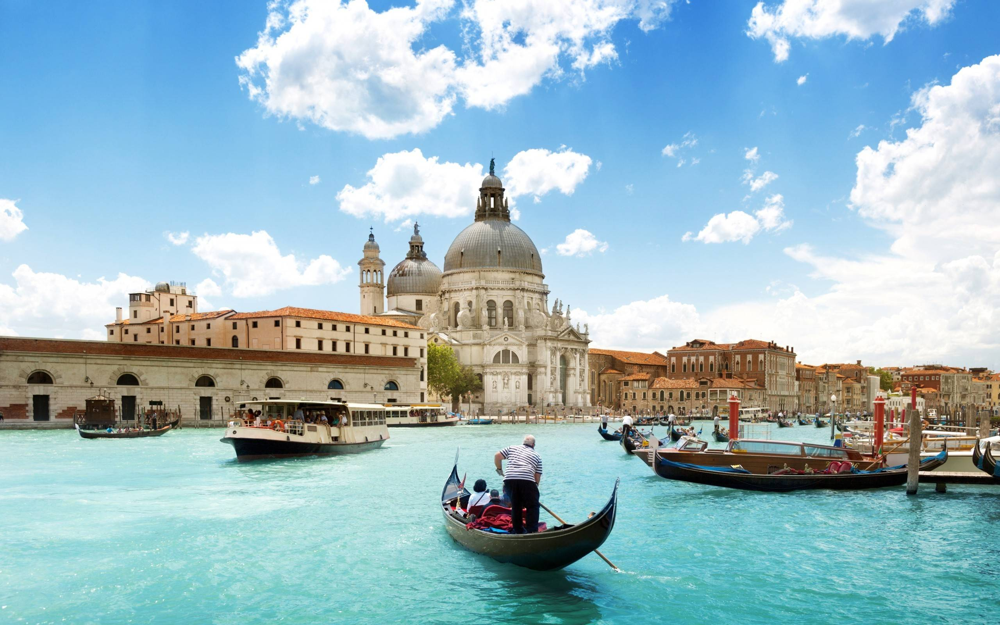
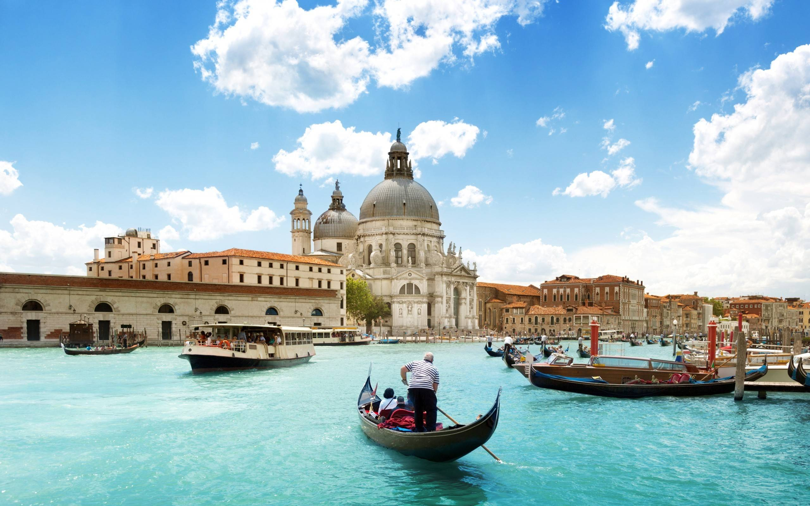
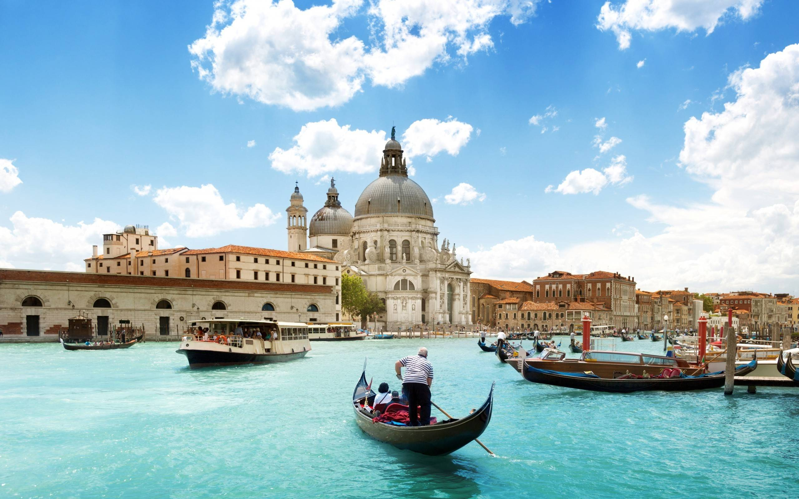

Italy, a European country with a long Mediterranean coastline, has left a powerful mark on Western culture and cuisine. Its capital, Rome, is home to the Vatican as well as landmark art and ancient ruins. Other major cities include Florence, with Renaissance masterpieces such as Michelangelo’s "David" and Brunelleschi's Duomo; Venice, the city of canals; and Milan, Italy’s fashion capital.
Thousands of Paleolithic-era artifacts have been recovered from Monte Poggiolo and dated to around 850,000 years before the present, making them the oldest evidence of first hominins habitation in the peninsula. Excavations throughout Italy revealed a Neanderthal presence dating back to the Palaeolithic period some 200,000 years ago, while modern Humans appeared about 40,000 years ago at Riparo Mochi. Archaeological sites from this period include Addaura cave, Altamura, Ceprano, and Gravina in Puglia.
The Ancient peoples of pre-Roman Italy – such as the Umbrians, the Latins (from which the Romans emerged), Volsci, Oscans, Samnites, Sabines, the Celts, the Ligures, the Veneti and many others – were Indo-European peoples, most of them specifically of the Italic group. The main historic peoples of possible non-Indo-European or pre-Indo-European heritage include the Etruscans of central and northern Italy, the Elymians and the Sicani in Sicily, and the prehistoric Sardinians, who gave birth to the Nuragic civilisation. Other ancient populations being of undetermined language families and of possible non-Indo-European origin include the Rhaetian people and Cammuni, known for their rock carvings in Valcamonica, the largest collections of prehistoric petroglyphs in the world. A well-preserved natural mummy known as Ötzi the Iceman, determined to be 5,000 years old (between 3400 and 3100 BCE, Copper Age), was discovered in the Similaun glacier of South Tyrol in 1991.
The first foreign colonizers were the Phoenicians, who initially established colonies and founded various emporiums on the coasts of Sicily and Sardinia. Some of these soon became small urban centres and were developed parallel to the Greek colonies; among the main centres there were the cities of Motya, Zyz (modern Palermo), Soluntum in Sicily and Nora, Sulci, and Tharros in Sardinia.
Between the 17th and the 11th centuries BC Mycenaean Greeks established contacts with Italy and in the 8th and 7th centuries BC a number of Greek colonies were established all along the coast of Sicily and the southern part of the Italian Peninsula, that became known as Magna Graecia. The Greek colonization placed the Italic peoples in contact with democratic government forms and with elevated artistic and cultural expressions.
Italy, country of south-central Europe, occupying a peninsula that juts deep into the Mediterranean Sea. Italy comprises some of the most varied and scenic landscapes on Earth and is often described as a country shaped like a boot.
At its broad top stand the Alps, which are among the world’s most rugged mountains. Italy’s highest points are along Monte Rosa, which peaks in Switzerland, and along Mont Blanc, which peaks in France. The western Alps overlook a landscape of Alpine lakes and glacier-carved valleys that stretch down to the Po River and the Piedmont. Tuscany, to the south of the cisalpine region, is perhaps the country’s best-known region. From the central Alps, running down the length of the country, radiates the tall Apennine Range, which widens near Rome to cover nearly the entire width of the Italian peninsula. South of Rome the Apennines narrow and are flanked by two wide coastal plains, one facing the Tyrrhenian Sea and the other the Adriatic Sea.
Much of the lower Apennine chain is near-wilderness, hosting a wide range of species rarely seen elsewhere in western Europe, such as wild boars, wolves, asps, and bears. The southern Apennines are also tectonically unstable, with several active volcanoes, including Vesuvius, which from time to time belches ash and steam into the air above Naples and its island-strewn bay. At the bottom of the country, in the Mediterranean Sea, lie the islands of Sicily and Sardinia.
Divided by politics and geography for centuries until its eventual unification in 1861, Italy's culture has been shaped by a multitude of regional customs and local centres of power and patronage. Italy has had a central role in Western culture for centuries and is still recognised for its cultural traditions and artists. During the Middle Ages and the Renaissance, a number of magnificent courts competed for attracting the best architects, artists and scholars, thus producing a great legacy of monuments, paintings, music and literature. Despite the political and social isolation of these courts, Italy's contribution to the cultural and historical heritage of Europe and the world remain immense.
Italy has more UNESCO World Heritage Sites (55) than any other country in the world, and has rich collections of art, culture and literature from many periods. The country has had a broad cultural influence worldwide, also because numerous Italians emigrated to other places during the Italian diaspora. Furthermore, Italy has, overall, an estimated 100,000 monuments of any sort (museums, palaces, buildings, statues, churches, art galleries, villas, fountains, historic houses and archaeological remains), and according to some estimates the nation is home to half the world's great art treasures.